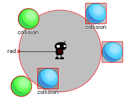

collision_circle( x1, y1, rad, obj, prec, notme );
| Argument | Description |
|---|---|
| x1 | The x coordinate of the center of the circle to check. |
| y1 | The y coordinate of the center of the circle to check. |
| rad | The radius (distance in pixels from its center to its edge). |
| obj | The object to check for instance collisions. |
| prec | Whether the check is based on pixel-perfect collisions (true = slow) or its bounding box in general (false = fast). |
| notme | Whether the calling instance, if relevant, should be excluded (true) or not (false). |
Returns : Instance id or noone
Collision circle creates a circular zone of the radius given by the user around the points x1,y1 and then checks that zone for a collision with any instance of the object specified by the argument "obj".
This check can be either precise or not, but for precise collisions to be enabled, the object or instance that you are checking for must also have precise collisions enabled for their sprite. If not, the default
check is based on bounding boxes. The following image illustrates how this works :

Here, the instance in the middle is using a collision circle to check for ball objects. Now, the blue ones do not have a precise bounding box and as you can see, even if the sprite is not actually touching
the circle, the collision can still happen (even if you set the precise option in the function to true) as the bounding box of that sprite over-laps the circular area defined by collision_circle. On the other hand, the
green balls will only be considered in collision if the actual sprite over-laps with the defined circle. Remember, for precise collisions to be considered both the object sprite and the collision function must
have precise marked as on. It should also be noted that the return value of the function can be the id of any one of the instances considered to be in collision.
if collision_circle(x, y, 20, obj_Cursor, false, true)
{
image_index = 1;
}
else image_index = 0;
The code above will check a circular are with a 20pixel radius for a collision with "obj_Cursor" and if there is one it will set the image_index of the object running the code to 1, but if there is not it will set the image_index of the object to 0.